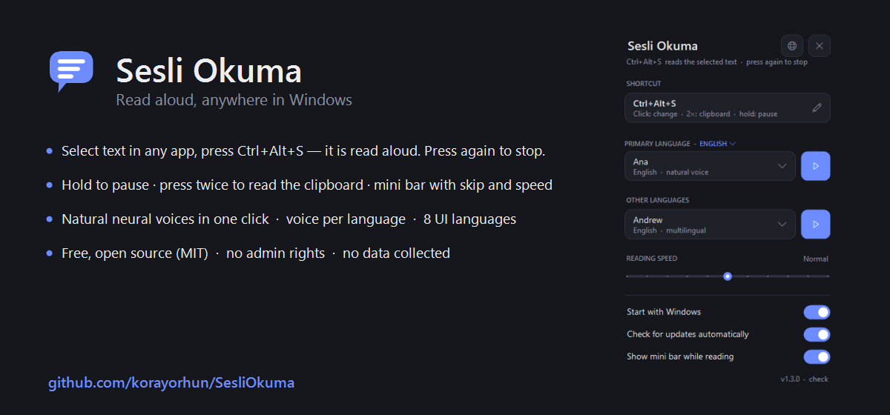
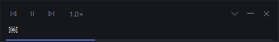
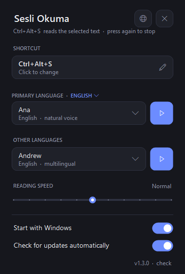

Sesli Okuma
Select text in any Windows app, press Ctrl+Alt+S — hear it read aloud with natural voices. Free & open source (MIT).
Windows 10/11 · ~1 MB · no account, no ads, no telemetry

Works everywhereBrowsers, Office, PDF readers, IDEs, chat apps — one global shortcut.
Natural voicesOne-click install of Microsoft's online neural voices (Turkish, English and 70+ more).
Follow alongA minimal bar shows the text with soft word highlighting, pause, sentence skip and speed — text size adjustable.
Translate & readCtrl+Alt+T translates the selection to your language and reads it — free, no account.
Save as audioExport any selection as a WAV file from the tray menu.
8 UI languagesEnglish, Türkçe, 中文, हिन्दी, Español, Français, العربية, Português.


Türkçe
Herhangi bir Windows uygulamasında metni seçin, Ctrl+Alt+S'ye basın — doğal seslerle okunsun. Tamamen ücretsiz ve açık kaynak (MIT).
Her yerde çalışırTarayıcı, Office, PDF, IDE, sohbet — tek küresel kısayol.
Doğal seslerMicrosoft'un çevrimiçi doğal sesleri (Emel, Ahmet…) tek tıkla kurulur.
Takip ederek dinleyinMini çubukta metin, yumuşak kelime vurgusu, duraklat, cümle atlama ve hız; yazı boyutu ayarlanabilir.
Çevir & okuCtrl+Alt+T seçimi dilinize çevirir ve okur — ücretsiz, hesap gerekmez.
Ses dosyası kaydetSeçimi WAV olarak dışa aktarın.
Panoyu ve odağı korurÇalışmanızı asla bölmez: odak çalmaz, panonuzu geri yükler.
© Koray Orhun · MIT License · Feedback · ♥ Sponsor